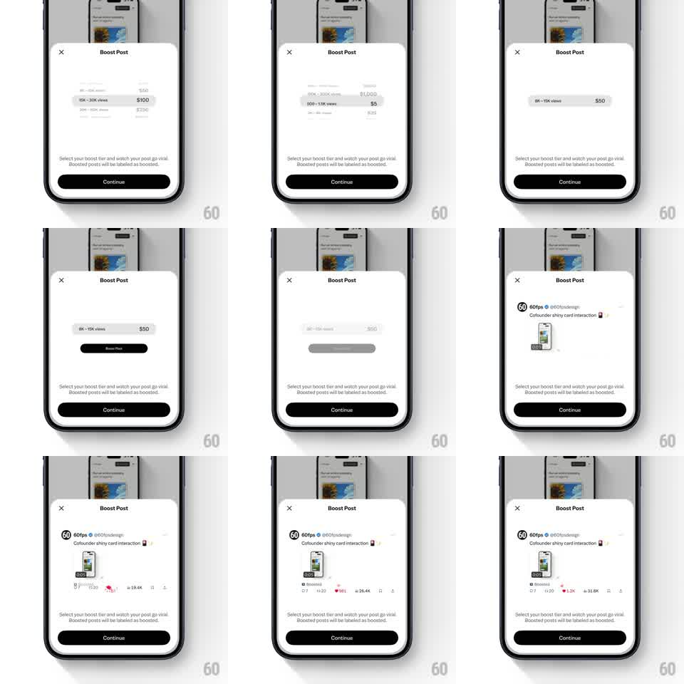

Media
Frame-by-frame

Rebuild this animation 1:1: X's "Boost Post" sheet - the white bottom sheet auto-cycles through boost tiers (views range + price: "8K - 15K views / 0", "15K - 30K views / 00"...), each tier pill highlighting in turn, then a live preview of your post materializes inside the sheet with a "Boosted" label and its engagement counts ticking upward.

Rebuild this animation 1:1: X's "Boost Post" sheet - the white bottom sheet auto-cycles through boost tiers (views range + price: "8K - 15K views / 0", "15K - 30K views / 00"...), each tier pill highlighting in turn, then a live preview of your post materializes inside the sheet with a "Boosted" label and its engagement counts ticking upward.
## Integration
Integration: stack-agnostic spec - springs given as stiffness/damping, timed motions as duration + curve; map every value to your framework and animation library of choice.
## Scene
White rounded bottom sheet over a dimmed timeline: "Boost Post" title + close X, a stack of tier rows (views range left, price right), explainer copy ("Select your boost tier and watch your post go viral. Boosted posts will be labelled as boosted."), black Continue button.
## Motion spec
Pattern: auto-cycling showcase + live preview, ~8s loop.
- Tier cycle: each tier row slides into focus (the stack translates vertically, 300ms, ease-out), the active row gets a filled pill treatment and its price stays pinned right; ~1.2s per tier.
- Preview reveal: after the cycle, the tier stack collapses upward (250ms) and the user's actual post card rises into the sheet (translateY 24px -> 0, fade, 350ms, ease-out).
- On the preview: a "Boosted" chip fades in above the post (200ms), then the engagement counts tick up (likes, views - 600ms ease-out, tabular-nums) with the heart filling red.
- Then the loop resets: preview slides out, tier stack returns.
## Calibration
- The preview uses the user's real post content - a generic mock kills the pitch.
- Count tick-ups are modest and plausible (hundreds, not millions).
## Reduced motion
Tiers crossfade; preview fades in; counts set instantly.
## Don't miss
- The sheet never grows past its detent - content swaps inside a fixed frame.
- Explainer copy + Continue stay pinned at the bottom through every state.